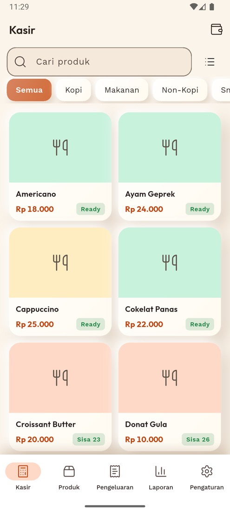
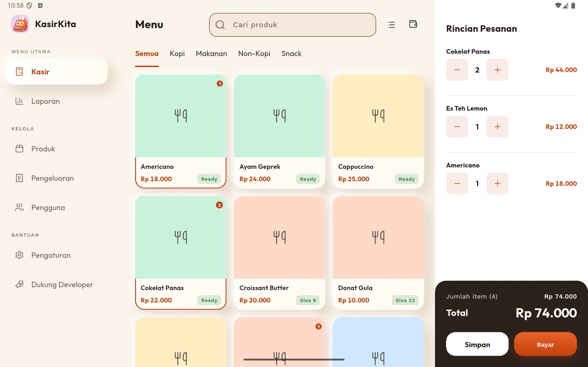
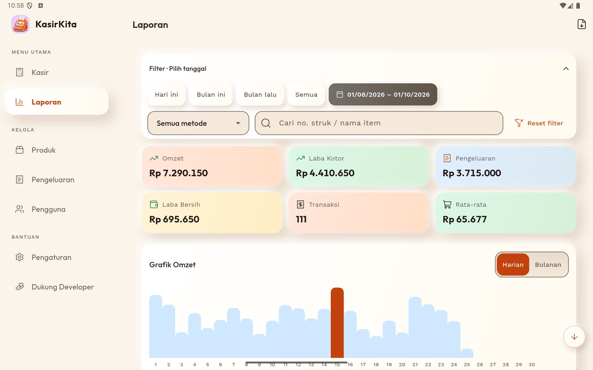

Lihat langsung
Satu transaksi, 3 langkah
- Pilih menuCari produk atau pilih dari kategori.
- BayarAtur jumlah, lalu bayar tunai atau non-tunai.
- Cetak strukStruk keluar dari printer Bluetooth, transaksi masuk laporan.
Catat penjualan, cetak struk, dan lihat untung harian. Tetap jalan tanpa internet, data aman di HP Anda.
Kasir Ceria adalah aplikasi kasir (POS) gratis untuk Android yang bekerja tanpa internet. Cocok untuk warung, kedai kopi, resto kecil, dan toko kelontong. Dibuat oleh ASDEV.id.
Pilih menu, bayar, struk keluar. Rekap harian sudah jadi.
Semua fitur bisa dipakai tanpa biaya bulanan.
Data disimpan di HP. Sinyal hilang, jualan tetap lanjut.
Dibuat untuk warung, kedai kopi, resto kecil, dan toko kelontong.
Cari produk, filter kategori, tambah jumlah dengan tombol + −.
Cetak ke printer thermal 58 mm atau 80 mm, lengkap dengan logo toko.
Omzet, laba kotor, laba bersih, dan grafik harian atau bulanan.
Catat belanja bahan, buka dan tutup shift dengan hitungan kas.
Tambah akun kasir. Laporan dan pengaturan hanya untuk Owner.
Simpan backup ke file, lalu pulihkan di HP baru dalam beberapa langkah.

Klik fitur untuk melihat tampilannya
Di tablet, menu dan rincian pesanan tampil berdampingan. Cocok ditaruh di meja kasir cafe atau resto.


Unduh Kasir Ceria dari Google Play.
Isi nama pengguna, password, dan profil toko. Akun tersimpan di HP.
Tambah produk dan kategori, lalu catat penjualan pertama.
Ya. Semua fitur bisa dipakai tanpa biaya dan tanpa iklan.
Tidak untuk jualan. Internet hanya dipakai untuk cek versi terbaru dan membuka halaman Dukung Developer.
Di HP Anda sendiri. Kami tidak menyimpan data penjualan Anda di server.
Buat backup di HP lama, salin filenya, lalu pilih "Pulihkan dari Backup" saat pertama membuka app di HP baru.
Printer thermal Bluetooth ukuran kertas 58 mm atau 80 mm.
Bisa. Kirim pesan ke Instagram @ngodingdarirumah.
Gratis, bisa offline, dan data tetap di HP Anda.
Download di Google Play